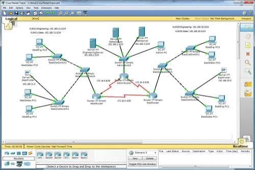

Redes
No segundo ano, o conteúdo avançou para a comunicação entre dispositivos e infraestrutura de rede. Estudei as principais topologias (Estrela, Barramento e Anel), os protocolos de comunicação como TCP/IP e HTTP, práticas de configuração com o simulador da Cisco Networking Academy e a integração de dispositivos inteligentes de IoT, como Alexa, lâmpadas e fechaduras conectadas.
Cisco
No segundo ano, o conteúdo avançou para a comunicação entre dispositivos e infraestrutura de rede. Estudei as principais topologias (Estrela, Barramento e Anel), os protocolos de comunicação como TCP/IP e HTTP, práticas de configuração com o simulador da Cisco Networking Academy e a integração de dispositivos inteligentes de IoT, como Alexa, lâmpadas e fechaduras conectadas.
Topologia
Analisei os diferentes jeitos de organizar e conectar os computadores dentro de uma rede, estudando três formatos principais. Na topologia em Estrela, todos os aparelhos se ligam a um ponto central, como um switch, facilitando o controle da rede. Na topologia em Barramento, as máquinas compartilham um único cabo principal, e na topologia em Anel, os equipamentos são conectados em círculo, fazendo os dados passarem de um dispositivo para o outro.
Protocolos
Estudei as regras que permitem que os aparelhos conversem entre si pela rede e pela internet, com foco nos protocolos IP, TCP e HTTP. Aprendi na prática que o IP funciona como o endereço único que identifica cada dispositivo conectado, enquanto o TCP garante que os pacotes de dados cheguem inteiros e na ordem certa. Já o HTTP é o protocolo responsável por fazer a comunicação entre o navegador e os servidores para carregar as páginas web que acessamos.
